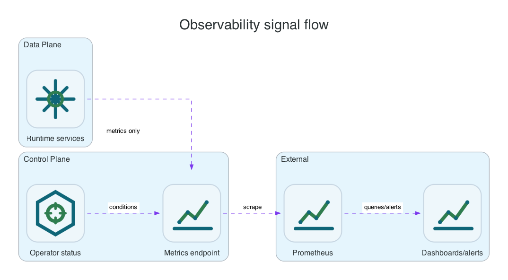

Reference / Runtime
Observability for Li9 S3 runtime and control planes.
Li9 S3 exposes runtime metrics, request/audit signals, health status, and optional platform-native dashboards. The signals are common, but collection is configured differently on OpenShift Operator, Helm, Linux, and Windows installs.
What This Covers

| Signal Group | Why It Matters | Primary Consumers |
|---|---|---|
| Gateway latency and errors | Client-visible S3 health, AWS CLI compatibility, timeout behavior, and authorization failures. | Platform SREs, application owners. |
| Object commit and storage-node health | Whether writes are reaching the configured protection level and whether any node is degrading write durability. | Storage operators. |
| Metadata quorum and WAL lag | Whether the metadata service can safely accept writes and recover after restart. | Storage operators. |
| Audit, KMS, replication, lifecycle, and healing outboxes | Whether asynchronous work is progressing or backing up. | SREs and security teams. |
| Control-plane reconcile health | Whether the selected platform owner is applying desired state and reporting meaningful status. | Platform administrators. |
Platform Setup
| Mode | How To Enable | How To Check |
|---|---|---|
| OpenShift Operator | Enable observability in S3Storage or companion observability CR. The operator creates ServiceMonitors, PrometheusRules, and dashboard ConfigMaps where configured. | oc -n li9-s3-runtime get servicemonitor,prometheusrule,configmap -l app.kubernetes.io/part-of=li9-s3 |
| Helm | Set chart values for metrics, ServiceMonitor, PrometheusRule, and dashboard output. Helm owns the rendered monitoring resources. | helm get values li9-s3 -n li9-s3-helm --all and kubectl get servicemonitor,prometheusrule. |
| Linux | Expose metrics listeners from service config and scrape them with Prometheus, Grafana Agent, OpenTelemetry Collector, or an internal monitoring agent. | Use curl against the local metrics endpoint and journalctl -u 'li9-s3*'. |
| Windows | Expose metrics listeners from service config and collect logs from Windows Event Log or product log files. | Use Invoke-WebRequest against the local metrics endpoint and Get-EventLog. |
OpenShift Checks
oc -n li9-s3-runtime get servicemonitor li9-s3-runtime li9-s3-operator-http
oc -n li9-s3-runtime get prometheusrule li9-s3-alerts
oc -n li9-s3-runtime get configmap li9-s3-grafana-dashboard
oc -n li9-s3-runtime get service -l monitoring.li9.com/scheme=https
oc -n li9-s3-runtime get s3storage li9-s3 -o jsonpath='{.status.conditions}' | python3 -m json.toolWhat A Useful Dashboard Should Show
- Request rate, p50/p95/p99 latency, and 4xx/5xx split by S3 operation.
- Write commit failures, shard write duration, storage-node availability, and degraded-mode state.
- Metadata leader, quorum state, WAL fsync latency, snapshot age, and apply lag.
- Lifecycle, replication, inventory, archive restore, and healing backlog age.
- KMS and audit outbox retries, dead-letter counts, and delivery latency.
Failure Signals
| Symptom | Likely Meaning | Next Check |
|---|---|---|
| Gateway 5xx increases while metadata quorum is lost | Writes are failing closed to avoid split-brain or unsafe metadata commits. | Metadata service logs, quorum metric, PVC health. |
| Healing backlog grows after a node outage | Object data repair is pending or storage nodes are still degraded. | Storage-node metrics and healing-service run history. |
| KMS outbox retries grow | Encryption audit or external key wrapping path is unavailable. | KMS service logs, TLS credentials, provider endpoint. |
| Operator reconcile errors persist | The desired CR state cannot be applied to Kubernetes resources. | Operator logs and CR status conditions. |